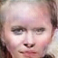
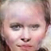

HW7: DCGAN
Assignment Optional
IMPORTANT: Note that, as we reach the end of the semester, we are giving you less information about the model architecture than we have in previous assignments. This information is contained within the paper, which we ask that you read in its entirety. As you may be experiencing in your final projects, the ability to read academic papers and reproduce their results is an essential skill for those working in this field.
In this assignment, you will implement a Generative Adversarial Network which generates images of human faces. This assignment builds upon skills and knowledge you’ve acquired by doing both the GAN lab and the convolutional autoencoder lab. As in the GAN lab, your model will use a basic generator + discriminator setup, where training alternates between updating the generator and the discriminator. Like the convolutional autoencoder lab, your networks will be convolutional: the generator will be an up-convolutional network which maps a random latent code to an image, and the discriminator will be a down-convolutional network which maps an image to a real/fake probability. The model you will implement will be based on the ‘DCGAN’ architecture described in this paper. DCGANs are a standard baseline for generative image-based modeling. They replace max pooling with convolutional stride, eliminate fully connected layers, and use transposed convolution for upsampling.
Conceptual Questions
You can access the conceptual questions on the course website, but as this assignment is optional we will not have you submit them. They are solely for your viewing benefit.
Getting the stencil
Please click here to get the stencil code. Reference this guide or these slides for more information about GitHub and GitHub Classroom.
To get the data, please run the included script in the hw7 directory.
Note, you may choose to develop your project in REPL.it, an online IDE linked to your GitHub Repo, but make sure you still git commit and push!
Setup
This assignment is computation heavy and requires you to use a GPU (via GCP). See the GCP lab if you need a refresher on how that works.
Data
We'll be using images from the CelebA dataset (short for “Celebrity Faces with Attributes”) for this assignment.
We’re not using the attributes for this project, so the data just includes images of faces. You can find the data in the following location:
Run the download.sh script to extract the dataset.
This should create a data/celebA folder.
Here are some examples of what the outputs of your model might look like:
 



Packages
There are some new packages that you will need to run this assignment. Make sure to install them LOCALLY with pip before moving on:
tqdm
request
tensorflow_gan
imageio
tensorflow_hub
If you would like to know what each of these packages do, feel free to look them up!
Layers
Once again, you can use keras layers to construct your model. If you wish, you may use the keras sequential API as an easier and quicker way to create your model.
Argparse
For this assignment, we've written the stencil with the argparse library. argparse allows us to adjust hyperparameters using the command line so that you can tune hyperparmeters without having to keep modifying your file once you've transferred it to GCP.
We've defined several hyperparameters for you, which you can access using args.VARIABLE_NAME. For instance, if you wanted to access the batch size variable, you would use args.batch_size.
These parameters have default values, and you can adjust the values of these parameters via the command line. In order to test your model, for example, run python assignment.py --mode test.
Assignment Overview
In this assignment we will not give the specific implementation details, as they are outlined in the paper. However, we will give you the general steps your implementation should follow:
Roadmap
- Load and preproccess the image data (The stencil code already does this for you).
- Build the DCGAN generator network (details in the paper)
- Build the DCGAN discriminator network (details in the paper) Note Remember that your discriminator loss will be the sum of two different losses: one for the real images and one for the fake images.
- Set up training losses (remember that you should be using binary cross entropy, which is its own unique loss function).
- Train and save the model. Remember that you will need to use two gradient tapes in order to track only the necessary operations for your discriminator and generator. Also, we recommend using the same batch size and optimization settings as in the DCGAN paper, since it can be difficult to get GANs to train stably. Finally, you should average the FID scores across an entire epoch and return it from your train method.
- Test the model by generating some image samples from random vectors.
Running Your Code
The model you’ll implement for this assignment is much more computationally intensive than models in previous assignments, so you'll need to run the code on a GPU-equipped machine. We recommend using a Google Compute Engine instance for this, though you're more than welcome to use another GPU-capable machine if you have access to one, but make sure that your program runs on the course's GCP environment before handing in. Not doing so may cause you to fail the autograder unnecessarily. Google Colab is another option, though you may need to make alterations to your file such that it will run in Colab.
Refer to the lab on GCP if you've forgotten how to run or generate an instance.
In our experiments, this model needs to train for ~5-6 epochs before it starts producing nice-looking images. This takes roughly 2 hours on a GCP machine with a Tesla K80 GPU.
However, you should start to see some vaguely face-like structures emerging after only a couple of epochs. Furthermore, if your model is not going to train stably, this will become evident very early on (after just a couple dozen iterations, usually). Training instability looks like one of the generator or discriminator losses (usually the discriminator) going to zero. Once one network’s loss goes to zero, the other one no longer receives any training signal and can’t make training progress.
Saving Your Trained Model
Be sure to save your model after every epoch.
Evaluation
Evaluating generative models such as GANs is much more difficult than classifiers--there's no obvious 'accuracy compared to ground truth' measure that we can use. One method that has emerged is the Frechet Inception Distance (FID), which runs real and generated images through an image classification network (specifically, an Inception network) and compares the activations produced by both. Ideally, the generated images should produce similar activations as the real ones. The stencil code for this assignment includes code to compute the FID after each epoch of training.
Tips & Other Notes
- You will find default arguments (such as the number of epochs) in the stencil python script. Spend some time reading them to familiarize yourself with them.
- Use keras's conv2d and conv2d_transpose for convolution and transposed convolution.
- Use batch normalization after every layer of the generator except for the output layer. For the discriminator, use batch normalization after every layer except for the input (first) layer. This improves training convergence. The DCGAN paper describes this, but it's worth mentioning again here.
- Use ReLU in between every layer of the generator and tanh on the output. Use LeakyReLU with a slope (alpha) of 0.2 between every layer of the discriminator. Like above, the DCGAN paper describes this, but it's worth still mentioning.
- We’ve found that training is more stable if you update the generator parameters twice for every update to the discriminator parameters. If you’d like to play around with the number of updates to the generator, the stencil code script accepts a command line argument
--num-gen-updatesthat you can use for this purpose.
Grading
Since this is an optional assignment, you will not be formally graded! However, the Gradescope autograder will still be up for you to test your GAN implementation if you so desire. For reference, originally to receive full credit for this auto-graded portion of this assignment, your model must achieve an FID (mentioned in the Evaluation section) of less than 500 after no more than 7 epochs or 3.5 hours of training on a GCP environment with the setup specified in the GCP lab. If you are taking the class as a graduate student, your model must achieve a FID of 210 or less.
If you are in CS2470, your FID score must be no less than 250.
Our autograder will NOT call your train function and instead simply evaluate using the saved weights.
IMPORTANT: We will NOT manually run your code if it fails the autograder, meaning that you will receive a 0/30 if your handin fails. Please run your model on GCP before handing in to make sure that you don't run into any errors.
Handing In
In your README, document any known bugs.
For the handin, you should submit a saved model, which should include a directory called variables (tensorflow should generate this automatically when you save) and another that includes the file saved_model.pb. You should also ensure that your model is in the generator directory.
You should be saving your model every epoch, and just submit the one with the best FID score.
You should submit the assignment via Gradescope under the corresponding project assignment by zipping up your hw7 folder.
IMPORTANT!
Please make sure your assignment.py, preprocess.py files are in hw7/code this is very important for our autograder to work!
DELETE the data folder before you zip up your code, it might be too big to upload to Gradescope